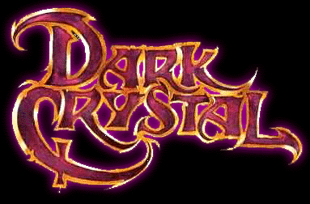
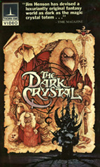

<body bgcolor="black" text = #668866 link=#bb2266 vlink=#ffffff>
<center><font size=3>This page is best viewed with frames, with more than 256 colors, and with resolution greater than 800 x 600.</font><br>

</center>
<h3>
<table border=0 cellpadding=0>
<tr>
<td>
<font size=5>
<p class="indent"> Directed by: Jim Henson and Frank Oz
<p class="indent"> Produced by: Jim Henson and Gary Kurtz
<p class="indent"> Excecutive Producer: David Lazer
<p class="indent"> Screenplay by: David Odell
<p class="indent"> Story by: Jim Henson
<p class="indent"> Conceptual Designer: Brian Froud
</font>
</td>
<td align=right width=200>

</td>
</table>
</h3>
<br>
<center>
<hr size=4 width="70%">
<br><table width="50%">
<tr><td>
Purpose: the first purpose of this site is for a final project for my Theature Arts Class. I have only spent 1 week on this entire site. I will improve it later, when I know more about the movie and I have more time (haha). <For now, this will just fullfill my requirements.>
</td>
</table>
<hr size=4 width="70%">
<br>
Page created by
<a href="mailto:sdr85@cats.ucsc.edu">Darrell Ross</a><br>
If there are any problems with copyright issues concerning pictures<br>
or other media used, please e-mail me and let<br>
me know so I can fix it.
<h3>
<a href="darkcrystal.html">Main</a>
||
<a href="plot.html">Plot</a>
||
<a href="characters.html">Characters</a>
||
<a href="links.html">Links</a>
</h3>
<embed src="sounds/feelpower.wav" autostart="true" hidden="true">
</center>
</BODY>